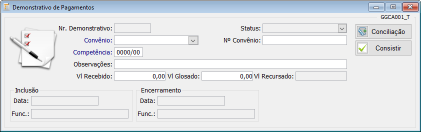
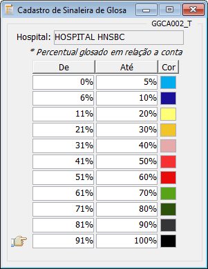
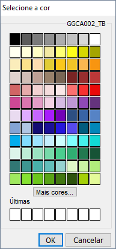
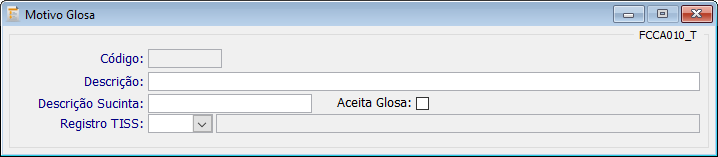
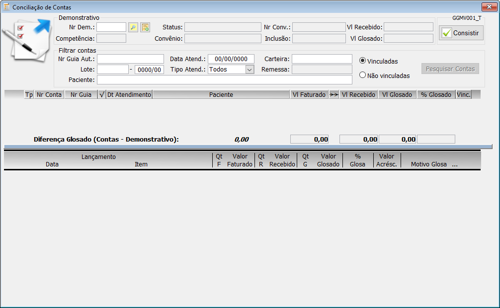
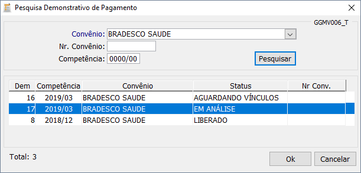
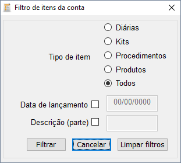
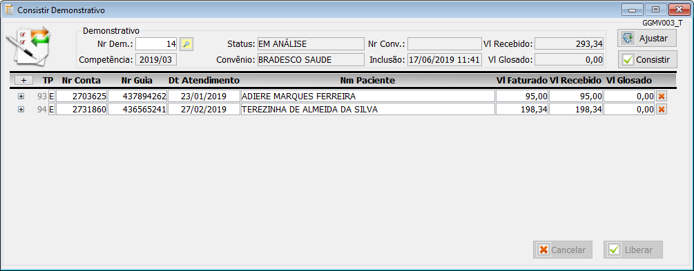
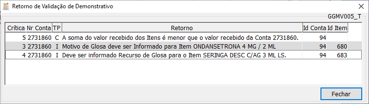
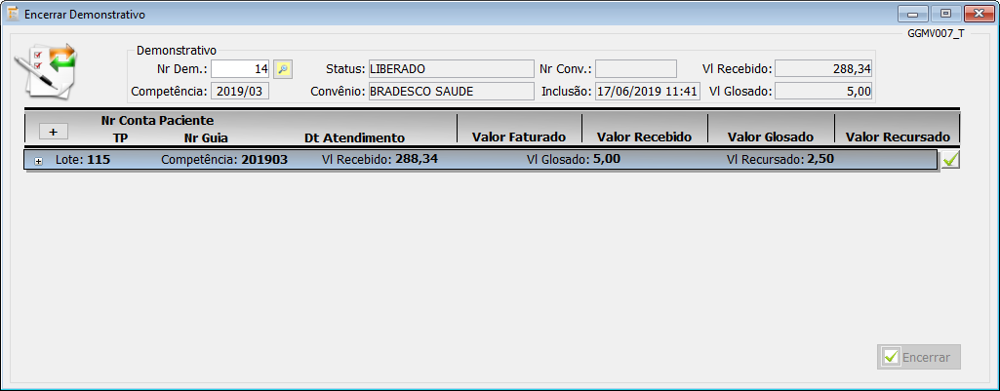

Voltar ao Índice de Manuais
INTRODUÇÃO
O módulo Gestão de Glosas é responsável pela análise e gerenciamento dos pagamentos realizados pelo convênio, podendo o
gestor de glosas identificar todas as contas e seus respectivos itens que por algum motivo foram glosados pela operadora.
Com uma tela fácil e intuitiva, o gestor de glosas poderá gerenciar as informações de forma rápida e segura, permitindo a ele selecionar
todas as contas que deverão ser vinculadas ao demonstrativo de pagamento e identificando com o motivo de glosa (Aceito ou Não aceito),
todos os itens que foram glosados pela operadora.
O módulo possibilita ao gestor de glosas o cadastro do demonstrativo e vinculação de contas manualmente, processo esse utilizado nos casos
em que a operadora ainda não disponibiliza o arquivo Demonstrativo de Análise de Contas no formato XML, bem como o processo de
importação, que cria o demonstrativo automaticamente, vinculando todas as contas, e identificando também de forma automática todos as contas e itens com as suas
respectivas glosas.
Vamos conhecer o módulo Gestão de Glosas?
A tela Demonstrativo de Pagamentos tem como principal finalidade possibilitar o registro de forma simplificada das informações
pertinentes ao Demonstrativo de Análise de Contas disponibilizadas pela operadora de saúde que compreendem o referido pagamento.

Ao abrir a tela Demonstrativo de Pagamentos, o usuário deverá selecionar o convênio desejado e informar a competência do
demonstrativo, que poderá ser igual a competência do lote.
Demais campos da tela não são de preenchimento obrigatório, porém, poderão ajudar a identificar facilmente o demonstrativo em uma
pesquisa futura, como exemplo o preenchimento do campo Observações, onde poderemos colocar informações referentes ao lote de faturamento.
Os campos referentes aos valores recebidos e glosados estarão disponíveis para preenchimento manual durante o cadastramento do
demonstrativo, porém, sugerimos que eles sejam deixados em branco, pois eles serão preenchidos automaticamente durante o gerenciamento dos recursos
registrados no processo Conciliação de Contas.
Após preencher os campos da tela, o usuário deverá salvar clicando no botão
na barra superior, com essa ação, o número do demonstrativo será gerado automaticamente e o
status inicial será colocado como AGUARDANDO VÍNCULOS, status esse que será ajustado a cada processo realizado.
No canto superior direito da tela existe dois botões que darão acesso aos processos Conciliação de Contas e
Consistir Demonstrativo, porém, esses botões só terão efeito após o demonstrativo ser cadastrado.
A tela Sinaleira tem como principal finalidade possibilitar o cadastro da faixa de percentuais de glosas que serão utilizadas na
tela Conciliar Demonstrativo, a fim de identificar o percentual de glosa de cada conta e item da conta.

Ao abrir a tela, o usuário irá visualizar a faixa de percentuais já cadastrados no sistema, porém, caso deseje alterar essas
informações, ele poderá fazê-lo, informando os novos percentuais linha a linha, bastando pressionar a tecla TAB para que seja aberta uma
nova linha até completar o ciclo de 100%.
Para cada sinaleira registrada, o usuário deverá definir uma cor específica que irá identificar o percentual de glosa da conta e
itens da conta na tela Conciliação de Contas, para definir a cor, basta clicar no campo Cor localizado no final de cada
linha e selecionar uma cor específica na tela que será aberta.
Atenção!!!
O percentual inicial da sinaleira não poderá ser igual ao percentual final da sinaleira anterior, caso isso ocorra, a mensagem
Valor final da faixa deve ser menor que o valor inicial da próxima faixa será disparada.

Após registrar todos os percentuais da sinaleira e selecionar as cores para cada uma delas, o usuário deverá salvar clicando no botão
na barra superior.
Atenção!!!
A cor de uma sinaleira não poderá ser igual a uma cor selecionada anteriormente, caso isso ocorra, a mensagem A cor
selecionada já está em uso por outro registro será disparada na tela.
A tela Motivo de Glosa tem como finalidade o cadastro dos principais motivos com maior ocorrência de glosas no faturamento ou de
ocorrências mais usuais que poderão ser utilizadas durante o processo.

Ao abrir a tela, o usuário deverá digitar a Descrição e Descrição Sucinta de forma clara e
objetiva para facilitar sua identificação durante o processo de conciliação de contas, pois será através dessas descrições que o usuário irá selecionar
o motivo de glosa que serão vinculadas aos itens glosados pela operadora, momento esse que irá definir se o item glosado será aceito ou se a ele caberá
um recurso.
No campo Registro TISS, o usuário deverá selecionar o motivo de glosa da tabela 38-Terminologia de Mensagens
da ANS, a fim de vinculá-lo ao motivo de glosa que está sendo cadastrado no sistema, motivo esse que será levado para o arquivo recurso de glosa
(XML), bem como a guia de recurso impressa.
O CheckBox Aceita Glosa, uma vez selecionado, irá definir que o motivo de glosa será aceito pelo hospital e a
ele não caberá nenhum recurso
Após preencher os campos da tela, o usuário deverá salvar o motivo de glosa clicando no botão
na barra superior, com essa ação, o número do motivo de glosa será gerado automaticamente.
A tela Conciliar Demonstrativo tem como principal finalidade, o gerenciamento de contas de um determinado lote ou lotes e seus
respectivos itens identificados no arquivo Demonstrativo de Análise de Contas disponibilizado pela operadora.

Ao abrir a tela, o usuário deverá informar o número do demonstrativo de pagamento no campo Nr Dem e dar um TAB,
após essa ação, serão mostradas na tela as informações referentes ao Status, Competência, Convênio e
Inclusão.
Se preferir, o usuário poderá pesquisar o demonstrativo de pagamento através da
localizada ao lado do campo Nr Dem, que ao clicar, abrirá a
Pesquisa Demonstrativo de Pagamento onde deverá ser informado o convênio.

Uma vez localizado o demonstrativo desejado, o usuário poderá dar um duplo clique para que as informações sejam
levadas para a tela de conciliação.
Caso o demonstrativo de pagamento não tenha sido cadastrado anteriormente, é possível acessar a tela de cadastro diretamente pela tela
Conciliação de Contas, bastando o usuário clicar no botão Demonstrativo de Pagamentos ao lado da
de pesquisa, com essa ação, o usuário será direcionado para a tela Demonstrativo de Pagamentos
e assim realizar o cadastro.
Com o demonstrativo cadastrado e com as informações na tela de conciliação, o usuário poderá pesquisar as contas que deverão ser
vinculadas ao demonstrativo, para isso, o usuário deverá ter em mãos o Demonstrativo de Análise de Contas disponibilizado pela operadora,
e decidir a forma de pesquisa desejada.
Se o usuário optar por realizar uma pesquisa de todas as contas, o primeiro passo que deverá ser realizado é selecionar a opção
Não vinculadas e clicar no botão Pesquisar Contas, dessa forma todas as contas relacionadas ao convênio e competência do
demonstrativo serão levadas para a tela.
Se o usuário optar por realizar uma pesquisa de contas mais detalhada, alguns campos da tela poderão ser preenchidos com informações
do tipo Nr Guia Aut, Data Atend, Carteira, Lote, Tipo Atend ou
Paciente, não esquecendo de selecionar a opção Não vinculadas antes de clicar no botão Pesquisar Contas.
Rever Tela Conciliação de Contas
Se o Demonstrativo de Análise de Contas disponibilizado pela operadora é específico de um lote de faturamento, o
usuário poderá preencher os campos destinados ao lote, dessa forma o sistema trará na grade de contas, somente contas do lote e que até o momento não
tenham sido vinculadas anteriormente a nenhum demonstrativo.
Após preencher um ou mais campos acima descritos, o usuário deverá clicar no botão Pesquisar Contas, onde
informações serão atualizadas na grade de contas contendo os seguintes dados:
| TP |
Conta E (Externa) e I (Interna) |
| Nr Conta |
Nº da conta do paciente |
| Nr Guia |
Nº da guia da Operadora |
|
Indica cta foi validada |
| Dt Atendimento |
Dta Atendimento da Cta |
| Paciente |
Nome do paciente |
| Vl faturado |
Valor de fatura da conta |
|
Seta para vínculo de itens |
| Vl. recebido |
Vlr pago pelo Convênio |
| Vl Glosado |
Valor glosa pela operadora |
| % Glosado |
Percentual de glosa do item |
|
CheckBox para vincular conta |
Com todas as contas disponíveis na grade, o usuário poderá realizar o vínculo das contas ao demonstrativo selecionando uma a uma através do
localizado no final de cada linha, e por fim, salvar clicando no botão
localizado no menu superior da tela, ou clicar no botão indicado por uma seta dupla,
()
localizada entre as colunas Vl Faturado e Vl Recebido.
Informativo!!!
Realizadas as ações ácima, todas as contas serão transferidas automaticamente para a situação Vinculadas.
Utilizando a segunda forma de vinculação, o campo Vl Recebido será atualizado automaticamente na parte superior da tela,
diferente da primeira forma, que atualiza esse mesmo campo somente após clicarmos na seta dupla
() conta
a conta.
Rever Tela Conciliação de Contas
Após realizar o vínculo de todas as contas, o usuário deverá selecionar a opção de filtro Vinculadas e clicar no botão
Pesquisar Contas, dessa forma, todas as contas vinculadas serão visualizadas novamente na grade.
Com as contas devidamente vinculadas ao demonstrativo, o usuário deverá selecionar a conta clicando sobre ela, realizado essa ação, todos
os itens que compõem a conta serão atualizadas na grade inferior da tela.
Nesse primeiro momento, os valores recebidos dos itens (Vl Recebido) não serão contabilizados na tela, e para que sejam
atualizados será necessário clicar novamente na seta dupla (
) localizada entre as colunas Vl Faturado e Vl
Recebido na grade superior.
Realizado os passos anteriores, o usuário deverá analisar todos os itens conta a conta, dando atenção especial aos itens com as glosas
apontadas pela operadora, registrando o motivo da glosa e definindo quais itens serão dados como Glosa Aceita bem como aqueles itens onde
cabe um recurso, informando o Motivo da Glosa e Justificativa.
Na grade de itens o usuário poderá visualizar os itens de forma individualizada, pois a tela possui uma funcionalidade de visualização por
grupo no formato árvore, identificada pelo sinal .
Exemplo: Materiais e Medicamentos
Para facilitar a visualização de itens por grupo, o usuário deverá clicar no sinal
localizado no início de cada grupo, dessa forma, ele poderá tanto inibir como mostrar os itens
que fazem parte do grupo.
Rever Tela Conciliação de Contas
A grade de itens possui uma funcionalidade de pesquisa que irá ajudar a localizar facilmente um item, para acioná-la o usuário deverá clicar
com o botão direito do mouse em qualquer parte da grade, com essa ação, a tela Filtro de Itens da conta abrirá, onde o usuário poderá escolher
algumas das opções de filtro disponibilizadas, como exemplo, Tipo de item (Diárias, Kits, Procedimentos e Produtos), Data de
lançamento ou informando Parte da Descrição do item.

Quando selecionamos uma conta na grade superior, todos os itens da conta são mostrados em sua totalidade na grade inferior, separados por grupo
de item, ou seja, OPME, Diárias, Procedimentos, Produtos e Kits.
Por padrão, o grupo OPME será mostrado no topo da grade de itens, considerando que esse tipo de item, por ter valores
expressivos, são considerados os mais importantes.
A barra horizontal localizada no centro da tela, entre as grades superior e inferior, possui uma funcionalidade bastante interessante que
permite ao usuário arrastá-la tanto para cima bem como para baixo, permitindo assim aumentar a visibilidade na quantidade de contas na grade superior bem como de
itens na grade inferior.
O primeiro passo para registrarmos os valores de glosas, é identificar as contas que se encontram nessa situação no demonstrativo de análise
de pagamento da operadora, uma vez identificada, o usuário deverá lançar o valor de glosa na coluna Vl Glosado na grade de contas.
Quando um valor de glosa é informado na coluna Vl Glosado na grade superior, o campo Vl Glosado na parte
superior da tela será atualizado automaticamente.
Após lançarmos o valor de glosa na coluna Vl Glosado na grade de contas, o sistema irá lançar o percentual de glosa
automaticamente na coluna % Glosado, atualizando também a cor da sinaleira, levando em consideração o intervalo do percentual de glosa cadastrado
no processo cadastro de sinaleiras.
Rever Tela Conciliação de Contas
Quando um valor de glosa é lançado para uma determinada conta, o mesmo deverá ser feito para o item ou itens na coluna Valor
Glosado na grade inferior da tela.
Se a glosa do item for de 100%, podemos também informar a quantidade glosada na coluna QT G, dessa forma o sistema zera
o valor da coluna Valor Recebido, atualiza o valor total do item na coluna Valor Glosado e o percentual de 100% de glosa na coluna
% Glosa.
Igualmente ao processo de lançamento de glosa na conta, a cor da sinaleira também é atualizada para o item, levando em consideração o
intervalo do percentual de glosa cadastrado no processo cadastro de sinaleiras.
Quando uma quantidade ou valor de glosa é informado na grade de itens, obrigatoriamente teremos que selecionar o motivo de glosa no campo
Glosar Grupo, seja o motivo de glosas Aceito ou Não Aceito.
Caso exista mais de um item com valor de glosa informado, e o motivo de glosa for comum entre eles, o usuário poderá replicar o motivo de
para todos os itens ao mesmo tempo, para isso, basta clicar nos no cabeçalho da coluna
Motivo Glosa.
Caso o usuário selecione o motivo de glosa Aceita, o valor de glosa do item será considerado como Perda,
porém, se a opção selecionada for um motivo de glosa Não Aceita, o valor recursado será contabilizado, gerando uma parcela no Contas a
Receber do módulo financeiro durante o processo Encerrar Demonstrativo.
Rever Tela Conciliação de Contas
Ao selecionar um motivo de glosa Não Aceita, o botão Recursar Glosa identificado pelo botão
[] no final da linha, ao clicar nesse botão, uma tela
Recurso de Glosa será aberta.
Na tela Recurso de Glosa o usuário deverá digitar detalhadamente a justificativa pelo qual está recursando o item, pois
essa informação será levada para a Guia de Recurso de Glosas bem como para o arquivo XML de recurso de glosa.
Na tela Recurso de Glosa, a opção Replicar recurso, quando selecionada, irá replicar o texto digitado
no campo justificativa para todos os itens com o motivo de glosa Não Aceita.
Após gerenciar todos os lançamentos, informando o valor de glosa para as contas e seus respectivos itens, o próximo passo a ser realizado
é a consistência, que poderá ser acionado no botão Consistir na parte superior da tela conciliação de contas, ou pelo menu Consistir
Demonstrativo.
A tela Consistir Demonstrativo tem como principal finalidade, realizar a consistência de valores entre os lançamentos informados na grade de
contas com os valores informados na grade de itens, bem como a verificação da possível falta de motivo de glosas e informações relacionados ao recurso de glosas que
porventura não sejam informados em itens que serão recursados.

Ao abrir a tela, o usuário deverá informar o número do demonstrativo de pagamento no campo Nr Dem e dar um TAB,
ou se preferir, o usuário poderá realizar uma pesquisa através da localizada ao lado do campo
Nr Dem, que ao clicar, abrirá a tela solicitando ao usuário informar obrigatoriamente o convênio.
Após realizar uma das ações acima, o usuário irá visualizar na tela todas as informações relacionadas ao Status (Em Análise),
Competência, Convênio, Inclusão, Vl Recebido e Vl Glosado, bem como a
relação de contas que foram vinculadas ao demonstrativo durante o processo Conciliação de Contas, com os seus respectivos valores faturados,
recebidos e glosados.
Na grade serão visualizadas as seguintes informações:
|
Botão p/ exibir detalhes da Cta |
| TP |
Conta E (Externa) e I (Interna) |
| Nr Conta |
Nº da conta do paciente |
| Nr Guia |
Nº da guia da Operadora |
| Dt Atendimento |
Dta Atendimento da Cta |
| Nm Paciente |
Nome do paciente |
| Vl faturado |
Valor de fatura da conta |
| Vl. recebido |
Vlr pago pelo Convênio |
| Vl Glosado |
Valor glosa pela operadora |
|
CheckBox Consistir Conta |
A consistência de contas poderá ser realizada de 02 formas na tela Consistir Demonstrativo, sendo a primeira através do
botão Consistir que tem a função de consistir todas as contas de uma única vez, e a segunda forma é realizar a consistência conta a conta, através
do CheckBox no final de cada linha da grade.
Para que possamos identificar se uma determinada conta foi ou não consistida, devemos observar a cor do CheckBox no final da linha da grade,
que estarão identificadas da seguinte forma:
CheckBox indicando que a conta não foi consistida
CheckBox indicando que a conta foi consistida
Durante o processo, algumas críticas poderão ocorrer, críticas essas que dependendo do problema encontrado, serão mostradas na tela
Retorno de Validação de Demonstrativo que será aberta sempre que uma inconsistência for identificada.

Na grade serão visualizadas as seguintes informações:
| Crítica |
Código de cadastro da crítica |
| Nr Conta |
Nº da conta do paciente |
| TP |
Tp crítica Item, Conta e Demonstrativo |
| Retorno |
Desc de cadastro da crítica |
| Id Conta |
Seq da cta no demonstrativo |
| Id Item |
Seq do item no demonstrativo |
Se, durante o processo Consistir Demonstrativo ocorrer alguma crítica, o usuário deverá voltar para a tela
Conciliação de Contas para realizar os devidos ajustes. Na tela de consistência existe um botão Ajustar que ao ser acionado,
levará o usuário diretamente para a tela de conciliação sem a necessidade de fechar a tela de consistência.
Após realizar os ajustes necessários e realizar novamente a consistência sem apresentar nenhuma crítica, na parte inferior da tela
Consistir Demonstrativo será disponibilizado o botão Liberar que uma vez acionado, irá liberar o demonstrativo de pagamento
para o processo de encerramento de demonstrativo.
Atenção!!!
O botão Liberar da tela Consistir Demonstrativo ficará bloqueado após a liberação do demonstrativo
de pagamento e somente ficará disponível mediante um cancelamento, processo esse que poderá ser realizado caso o usuário pressione o botão
Cancelar, para realizar possíveis ajustes de valores, quantidades de lançamentos, incluir ou excluir itens da tela Conciliar
Demonstrativo.
A tela Encerrar Demonstrativo tem como principal finalidade, encerrar o processo do demonstrativo no módulo Gestão de Glosas
e realizar a baixa das contas no processo Baixa do Contas a Receber do módulo Financeiro.

Ao abrir a tela, o usuário deverá informar o número do demonstrativo de pagamento no campo Nr Dem e dar um
TAB, ou se preferir, o usuário poderá realizar uma pesquisa através da localizada
ao lado do campo Nr Dem, que ao clicar, abrirá a tela solicitando ao usuário informar obrigatoriamente o convênio.
Após realizar uma das ações acima, o usuário irá visualizar na tela todas as informações relacionadas ao Status (Liberado),
Competência, Convênio, Inclusão, Vl Recebido e Vl Glosado, bem como a
relação de contas que foram vinculadas ao demonstrativo durante o processo Conciliação de Contas, com os seus respectivos valores faturados,
recebidos e glosados.
Na grade serão visualizadas as seguintes informações:
|
Botão p/ exibir detalhes da Cta |
| TP |
Conta E (Externa) e I (Interna) |
| Nr Guia |
Nº Guia Autoriz pelo Convênio |
| Dt Atendimento |
Data de atendimento da Cta |
| Vl faturado |
Valor de fatura da conta |
| Vl. recebido |
Vlr Pago pelo Convênio |
| Vl Glosado |
Vlr Glosado pelo Convênio |
| Vl Recursado |
Vlr Recursado pelo Gestor |
|
CheckBox p/ baixa Ctas a Rec |
| Lote |
Nº do(s) Lote(s) Faturamento |
| Competência |
Ano e Mês do(s) Lote(s) |
Informativo!!!
As contas vinculadas ao demonstrativo de pagamento poderão ser de um lote específico ou de vários lotes, e serão mostradas na grade de
forma individual.
Na tela Encerrar Demonstrativo, o encerramento do lote deverá ser realizado individualmente, bem como a baixa no
Contas a Receber do módulo Financeiro.